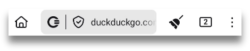

Features
Toolbar
At the bottom of the screen, you will see the bar containing various buttons. Some of them are probably self-explanatory, but others less so. Let’s take a quick look at each of them:
Home button
The first is the familiar Home button.
You can configure this button to be either shown or hidden, but going to Settings > Customisations > Show home button
Ceno button
Next is the Ceno button. Tapping on it will open an information screen that shows where the website components were retrieved from. We describe this screen in more detail in Personal and Public browsing sections.
Secure connection button
When you enter the website address you want to access, you will see the Secure connection button, represented by a small padlock or a small shield, which indicate that your connection to a particular website is secure.
If the padlock or shield is crossed with a line, it means that connection to that particular website is not secure. This is the same as in other browsers.

Note: even though connection to this particular website is not secure, the Ceno icon has a small green dot. This dot does not indicate that the connection is secure, but that the data was retrieved directly from the origin website.
If you tap on it, you will see the details of this connection. As an illustration, we include example screenshots of secure versus not secure connection.


Clear button
The first button on the right hand side of the address bar is the Clear button, in the shape of a small broom.
Tapping on it gives the user a choice to clear all Ceno data, as if Ceno was never used, or to clear only what Ceno stored in Cache. The first option clears all the preferences, bookmarks, setttings and customisations, whereas the second one will only clear the websites that the Ceno app stored in the cache on your device.

If you go to Settings > Customisations > Clear button you can choose whether you want the clear button to show in the toolbar or in the menu.
Tapping on the option Default behavior will open a dialog box that offers you to choose what you want your Clear button to do when you tap it. It can offer you a prompt, like on the above screenshot, or it can immediately delete all cached content or even all Ceno data.
Tabs button
Next is a small rectangle with a number in it. This number indicates how many tabs the user has opened.
Tapping on it opens a screen where you can see all the tabs that you have open.
You can close them one by one, if you tap on the vertical menu in the bottom right corner, you will get the option to close them all together.
When viewing the tab screen, at the top of that screen you will see the icons for Public or Personal browsing, and you can easily switch between them.
View when Public browsing icon is selected
View when Personal browsing is selected.

Vertical menu
What the three dot vertical menu on the far right hand side of the toolbar displays depends on the context.
- when you have a website page open, this menu will display options relevant to that page.
Most of the elements in this menu are self explanatory. But if you’re not familiar with the uBlock Origin, it is an ad and tracker blocker.
The reason we bundle it up with our Ceno browser is mostly to prevent unnecessarily caching advertisements and to avoid possibly caching unique identifiers associated with trackers.
To learn more about this ad and tracker blocker, please visit their webpage.
- If you tap on this menu when on the Ceno homepage, you will be able to see the item that allows you to clear Ceno (its action is the same as the small broom on the home screen).
- When you are on the tabs screen, tapping this menu will only give you the option to Close all tabs